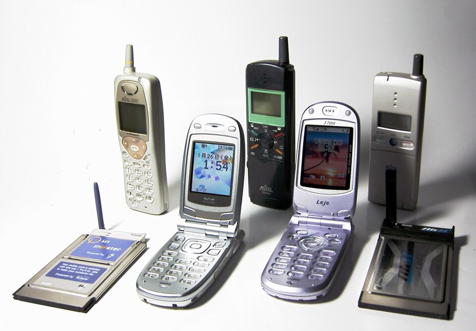

⛏I can phone a friend to share the world seed.
友人に電話してワールドシードを共有できます。
/aɪ kæn ˈfoʊn ə frɛnd tə ʃɛr ðə wɝld sid/
- 「phone a」→ phone の語末子音 /n/ が a の /ə/ に連結 [ˈfoʊnə] フォウナ
- 「to は弱形 /tə/ [tə] タ」
- 「the は弱形 /ðə/ [ðə] ザ」
アイ キャン フォウナ フレンド タ シェア ザ ワールド シード

⛏I can phone a friend to share the world seed.
友人に電話してワールドシードを共有できます。
⛏Did you phone about the creeper spawn rate?
クリーパーのスポーン率について電話で聞きましたか？
⛏The redstone phone system connects all our players across the server.
レッドストーン電話システムがサーバー中の全プレイヤーを繋いでいます。
Many players here are checking their phones instead of playing the game.
多くのプレイヤーはゲームをプレイする代わりに携帯をチェックしています。
Two high-end gaming phones are set up on the tournament table.
トーナメントテーブルに2台のハイエンドゲーミング携帯が設置されています。
He phones me every time he finds a Stronghold.
彼はストロングホールドを見つけるたびに僕に電話します。
She phones the admin whenever server lag gets too severe.
サーバーラグがひどくなるたびに彼女は管理者に電話します。
I phoned my teammate right after finding diamonds in the ravine.
峡谷でダイヤモンドを見つけた直後、チームメイトに電話しました。
He phoned from the mine because a Creeper had exploded nearby.
クリーパーが近くで爆発したため、彼は鉱山から電話しました。
I have phoned the guild leader about the weekend raid three times already.
週末のレイドについてギルドリーダーに既に3回電話しています。
She had phoned three players before the tournament started.
トーナメント開始前に彼女は3人のプレイヤーに電話していました。
While phoning his friend, he accidentally fell into lava and lost all his diamonds.
友人に電話している間に、彼は誤ってマグマに落ちてダイヤモンドをすべて失いました。
Instead of phoning the team, she just sent a message to Discord.
チームに電話する代わりに、彼女はDiscordにメッセージを送っただけです。
Steve is phoning his teammates to coordinate the mining expedition.
スティーブはチームメイトに電話をして採掘遠征を調整しています。
Are you phoning the players in the village right now?
今、あなたは村のプレイヤーに電話をかけていますか？
I was phoning for help when the creeper attacked the base.
クリーパーがベースを攻撃したとき、私は助けを求めて電話をかけていました。
They were phoning each other when the server went offline.
サーバーがオフラインになったとき、彼らは互いに電話をかけていました。
I had been phoning for help for an hour before anyone answered.
誰も答えるまで、私は1時間助けを求めて電話をかけ続けていました。
She had been phoning all the team members to gather them when I arrived.
私が到着したとき、彼女はすべてのチームメンバーに電話をして集めていました。
He has phoned everyone to gather at the meeting point.
彼は皆に電話して集合地点に集まるよう連絡しました。
We have phoned the server admin to report the griefing incident.
私たちはサーバー管理者に電話してグリーフィング事件を報告しました。
By the time the server went offline, they had phoned each other multiple times.
サーバーがオフラインになるまでに、彼らは何度も互いに電話をかけていました。
She had phoned the team leader before starting the Nether raid.
彼女はネザーレイドを開始する前に、チームリーダーに電話していました。
I have been phoning players all day to find the missing teammate.
私は一日中プレイヤーに電話をして、行方不明のチームメイトを探しています。
The admin has been phoning everyone since the new world launch.
新しいワールドの開始以来、管理者は皆に電話をかけ続けています。
⛏I'm on the phone with a friend about joining the server.
サーバーに参加することについて友人と電話中です。
⛏I'll phone you back when the farming is done.
農業が終わったら折り返し電話します。
⛏Phone home tonight to share the latest minecraft update.
最新のマインクラフトアップデートを共有するために今晩本拠地に電話してください。